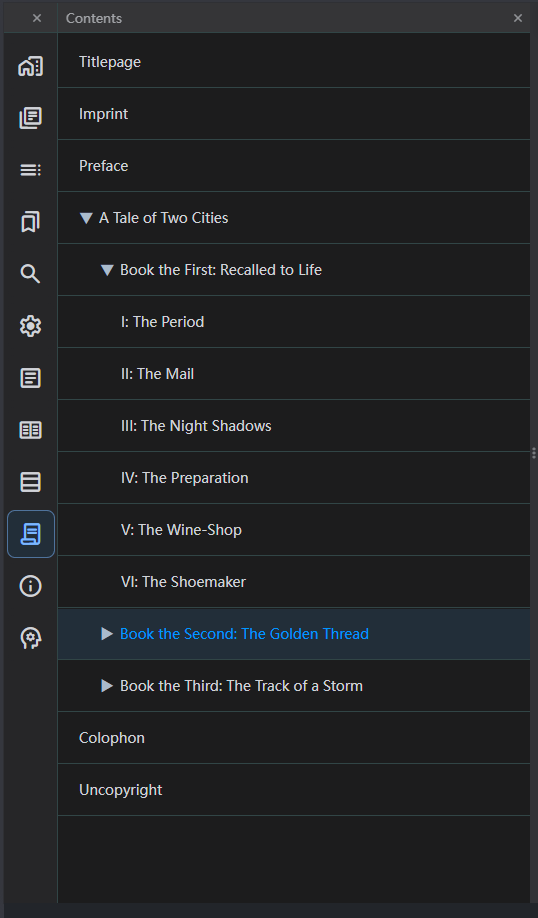
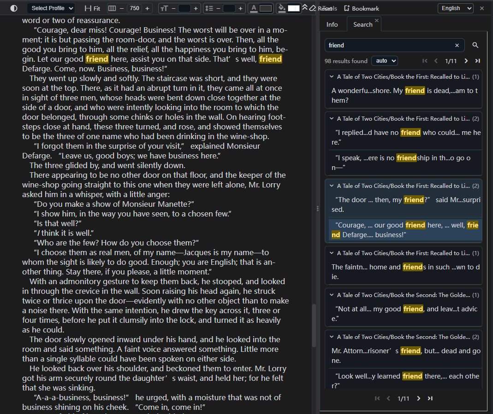

Contents & In-Book Search
Contents is for jumping between chapters; search is for finding one particular sentence.
Contents
- Click TOC in the toolbar; the chapter list opens on the right.
- Click any chapter and the text jumps to its beginning.
- Click TOC again to close the panel.

Search inside the book
- Click Search in the toolbar, type keywords and press Enter. You can enter several keywords separated by spaces; they are combined with AND.
- Results are listed by chapter and show the matching snippets.
- Click a result to jump there; the matching text is highlighted.

Paging through results
Many results are shown page by page. How many fit on a page is set in the Panel Settings section of reading settings; by default it adapts to the panel height.